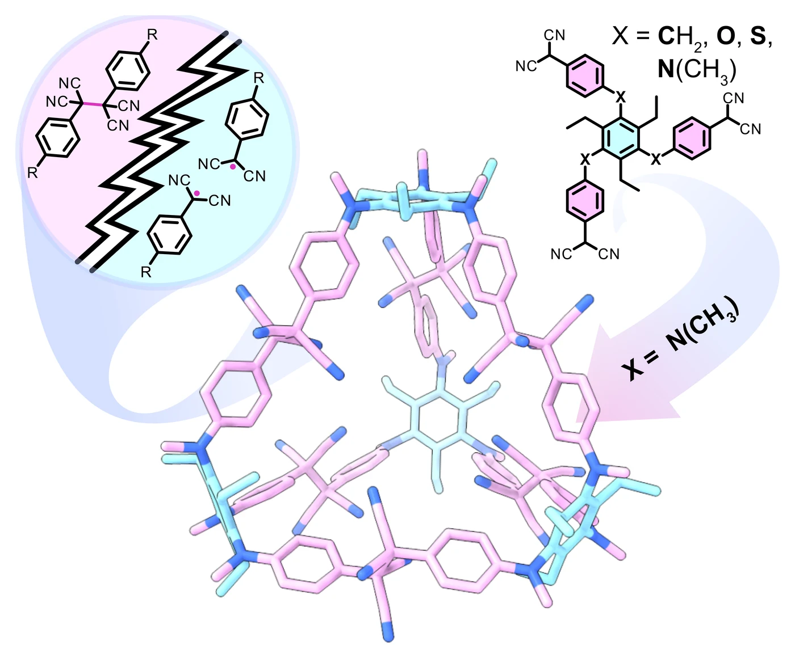
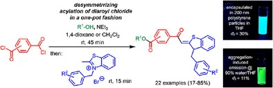
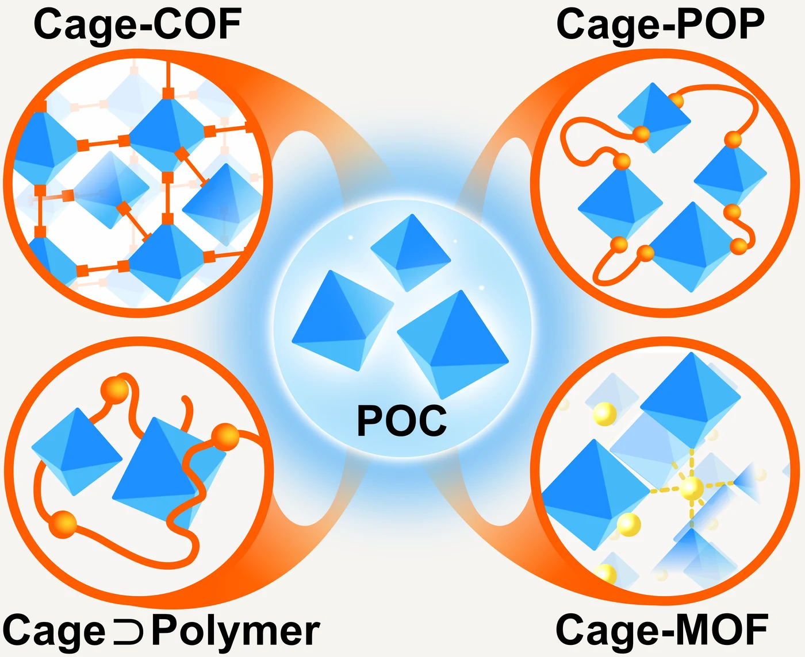
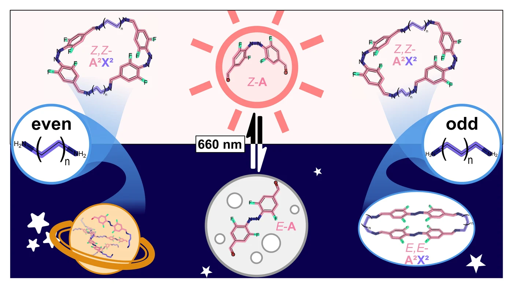
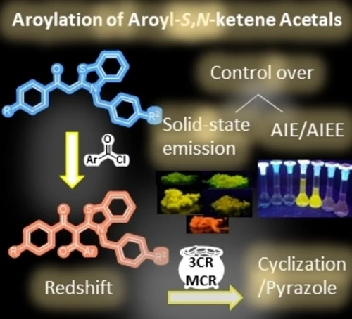

YannicHartmann
Doctoral researcher in supramolecular chemistry, Heinrich Heine University Düsseldorf
I build stimuli-responsive organic materials from carbon–carbon bonds that break and re-form on demand, and assemble them into macrocycles, cages and beyond.
Each glowing dot is a free radical. Move your cursor across the background to heat it: bonds break, radicals light up, and they pair up again as they cool. Each glowing dot is a free radical. Swipe across the background to heat it: bonds break, radicals light up, and they pair up again as they cool.
About me
I'm a doctoral researcher in the group of Dr. Bernd M. Schmidt at Heinrich Heine University Düsseldorf and a Kekulé Fellow of the Fonds der Chemischen Industrie.
In my PhD I develop novel organic materials through dynamic carbon–carbon bond formation, based on the reversible recombination of persistent radicals. Because these bonds can open and close again, the materials respond to external stimuli, a route towards a new generation of adaptive, stimuli-responsive materials.
I conceived my doctoral project independently and fund it through my fellowship. In the lab I supervise bachelor students, and I'm always glad to talk about radicals, cages or a possible collaboration.
CV (PDF)- Position
- Doctoral researcher
- Research group
- Supramolecular Chemistry, Dr. Bernd M. Schmidt
- Institution
- Heinrich Heine University Düsseldorf, Germany
- Funding
- Kekulé Fellowship, Fonds der Chemischen Industrie
Research
Dynamic covalent chemistry usually relies on bonds like imines or boronate esters. I use a carbon–carbon bond instead, formed by two radicals and opened again by a stimulus.
-
Reversible C–C bonds from radicals
Aryldicyanomethyl radicals are stable enough to persist in solution, yet they still pair up into σ-dimers. By changing the substituents on the aromatic core I tune that equilibrium, and with it how easily a bond forms and how readily it breaks.
-
Macrocycles and porous organic cages
Putting several radical sites on one building block turns this pairing into self-assembly. The system error-corrects its way to discrete macrocycles and cages, including cages with permanent porosity and selective gas uptake.
-
Materials that respond and self-heal
Because the bonds stay dynamic even in the solid state, these materials change colour under heat or pressure and recover after mechanical damage.
Publications
Peer-reviewed articles, newest first. Select a paper to read its abstract.
-
2026
Dynamic Covalent Radical Recombination for the Assembly of Tuneable Responsive Porous Organic Cages
Y. Hartmann, R. Oestreich, Y. Wada, P. de Bary, M. Kawano, C. Janiak, B. M. Schmidt, Angew. Chem. Int. Ed. 2026, 65, e7638565; Angew. Chem. 2026, 138, e7638565.
Abstract
The construction of discrete organic cages via radical recombination offers a powerful yet underexplored route toward stimuli-responsive, C–C-linked molecular architectures. Here, we introduce aryldicyanomethyl radical dynamic covalent chemistry as a general strategy for the controlled assembly of porous organic cages. Systematic variation of a single substituent governs both radical and σ-bond stability as well as the resulting cage geometry, enabling precise, substituent-dependent control over cage topology and responsiveness. A thiophenoxy-substituted monomer S selectively affords a discrete Tri2 dimer in 99% yield, whereas the N-methylaniline-substituted analogue N forms the tetrahedral Tri4 tetramer in 83% yield. N4 possesses permanent porosity and pronounced selectivity for CO2 and H2 over CH4 and N2, as confirmed by gas sorption experiments, arising from narrow pore apertures and strong host–guest interactions. Both cages display reversible mechano- and thermochromic behaviour. Moreover, the combination of a highly dynamic bond formation process with three-dimensional preorganisation of the cage enables efficient self-healing, which is markedly accelerated upon exposure to THF vapour. Collectively, these results establish radical recombination as an unexplored dynamic covalent motif for the synthesis of responsive organic cage architectures, enabling substituent-dependent fine-tuning of topology, stability, and material function through simple substituent modification.
Read the paperAbstract and graphical abstract © 2026 The Authors, Angew. Chem. Int. Ed., Wiley-VCH, CC BY 4.0.
-
2025
Ester-Aroyl-S,N-Ketene Acetals with Solid-State Luminescence: AIEgens from Sequential Three-Component Desymmetrization
Y. Hartmann,+ A. El Abbassi,+ B. Mayer, U. Resch-Genger, T. J. J. Müller, Chem. Eur. J. 2025, 31, e02071.
Abstract
Di(hetero)aroyl dichlorides are desymmetrized upon sequential reaction with alcohols and 2-methyl N-benzyl thiazolium salts within the course of a one-pot three-component reaction yielding ester-substituted aroyl-S,N-ketene acetals under mild conditions in good yields. A prerequisite for the concise one-pot process is the different nucleophilicity of the alcohols and in situ generated S,N-ketene acetals. The resulting compounds are merocyanines with dominant charge-transfer absorption bands which are fluorescent in the solid state, but not in solution. In water/ethanol solvent mixtures of increasing water content, the water-insoluble dyes display typical aggregation-induced emission (AIE) characteristics. The water fraction inducing AIE as well as the emission color, and fluorescence quantum yield (Φf) of the aggregated dyes can be controlled by the alcohol part of the ester moiety. Encapsulation into polystyrene nanoparticles can lead to a considerable increase of the fluorescence quantum yield Φf to 30% as shown for a representatively chosen dye revealing the highest Φf of 11% within the dye series in the water/ethanol mixtures and enabling the usage of these dyes as fluorescent reporters in aqueous environments.
Read the paperAbstract and graphical abstract © 2025 The Authors, Chem. Eur. J., Wiley-VCH, CC BY 4.0.
-
2025
Porous Organic Cages as Building Blocks for Framework Materials
M. Martínez-Fernández,+ Y. Hartmann,+ B. M. Schmidt, Angew. Chem. Int. Ed. 2025, 64, e202509618; Angew. Chem. 2025, 137, e202509618.
Abstract
Confined nanospaces play a fundamental role in nature, inspiring synthetic analogues that emulate biological precision and efficiency. Among these, porous crystalline materials such as covalent organic frameworks (COFs), metal-organic frameworks (MOFs), and molecular cage compounds have emerged as powerful platforms for catalysis, separation, and energy storage. Recent developments highlight the potential of porous organic cages (POCs) as modular building blocks for the construction of advanced materials. In this Minireview, their integration into extended frameworks, such as Cage-COFs and Cage-MOFs, is described, as they allow precise control over porosity and enhance chemical robustness. These hybrids merge the structural regularity of COFs with the discrete functionality of cages, enabling the design of lightweight, hierarchically organised materials. In addition, cage-containing polymers and supramolecular frameworks are discussed. Collectively, these developments position POCs as versatile synthons for next-generation porous materials, unlocking pathways toward functional, adaptive, and recyclable architectures.
Read the paperAbstract and graphical abstract © 2025 The Authors, Angew. Chem. Int. Ed., Wiley-VCH, CC BY 4.0.
-
2025
Visible-Light Switchable Rings and Chains in Dynamic Covalent Imine Chemistry
J. Voss, Y. Hartmann, E. Nieland, A. Mix, B. M. Schmidt, Chem. Eur. J. 2025, 31, e202501047.
Abstract
The self-assembly of red-light switchable, functionalised ortho-difluoroazobenzene isomers E-/Z-A with aliphatic diamines exhibits an alternating match/mismatch behaviour depending on the diamine's chain length. While even-numbered diamines exclusively form imine macrocycles with the Z-configured azobenzene isomer, odd-numbered diamines form photoswitchable, defined macrocycles. The formation of Z,Z-A2X2-type macrocycles was demonstrated with butane-1,4- (B) and hexane-1,6-diamine (H), while additionally E,E-A2X2-type macrocycles were obtained with propane-1,3- (Pr), pentane-1,5-diamine (Pe), and diethylene glycol bisamine (O), validated by single-crystal X-ray structures of E,E-A2Pr2 and E,E-A2O2. The observed reactivity differences arise from the preferred conformations of the flexible diamines in solution, which alternate predictably with odd and even numbers of methylene groups, investigated by 19F-DOSY NMR experiments, MALDI-MS measurements, and UV/Vis spectroscopy. These findings provide detailed insight into photoresponsive self-assembled systems and highlight the potential of azobenzenes in dynamic covalent chemistry, offering new opportunities for controlling structure and function in adaptive materials.
Read the paperAbstract and graphical abstract © 2025 The Authors, Chem. Eur. J., Wiley-VCH, CC BY 4.0.
-
2023
Alkynylated and triazole-linked aroyl-S,N-ketene acetals: one-pot synthesis of solid-state emissive dyes with aggregation-induced enhanced emission characteristics
L. Biesen, Y. Hartmann, T. J. J. Müller, Sci. Rep. 2023, 13, 14399.Abstract
Alkynylated aroyl-S,N-ketene acetals are readily synthesized in mostly excellent yields by a Sonogashira reaction resulting in a substance library of more than 20 examples. Upon expansion of the reaction sequence by deprotection and concatenating of the copper-click reaction in a one-pot fashion, a library of 11 triazole-ligated aroyl-S,N-ketene acetals is readily accessible. All derivatives show pronounced solid-state emission and aggregation-induced emission properties depending on the nature of the alkynyl or the triazole substituents.
Read the paperAbstract © 2023 The Authors, Sci. Rep., Springer Nature, CC BY 4.0.
-
2023
Diaroyl-S,N-ketene Acetals: Red-Shifted Solid-State and Aggregation-Induced Emitters from a One-Pot Synthesis
L. Biesen, Y. Hartmann, T. J. J. Müller, Chem. Eur. J. 2023, 29, e202301908.
Abstract
Symmetric and unsymmetric diaroyl-S,N-ketene acetals can be readily accessed in consecutive syntheses in good to excellent yields by exploiting the inherent nucleophilic character of the methine position. Different aroyl-S,N-ketene acetals as well as acid chlorides yield a library of 19 diaroyl compounds with substitution and linker pattern-tunable emission properties, leading to a significant red-shift of emission in the solid and aggregated state, which was thoroughly investigated. Additionally, the stability of the luminescent aggregates is highly increased. In a follow-up one-pot procedure, pyrazolo-S,N-ketene acetals can easily be accessed employing a nucleophilic cyclocondensation.
Read the paperAbstract and graphical abstract © 2023 The Authors, Chem. Eur. J., Wiley-VCH, CC BY-NC-ND 4.0.
Methods
Radicals and dynamic bonds need to be followed from several sides at once. These are the techniques I use day to day.
- Synthesis
- Multistep synthesis and retrosynthetic planning, palladium-catalysed cross-coupling, Schlenk techniques for air- and moisture-sensitive chemistry, column and gel permeation chromatography
- Spectroscopy
- EPR, NMR including DOSY and variable-temperature experiments, UV/Vis and fluorescence, IR, high-resolution mass spectrometry
- Structure and porosity
- Single-crystal and powder X-ray diffraction, gas sorption and BET analysis
- Electrochemistry
- Cyclic voltammetry
- Modelling
- Geometry optimisation and computational cage design
- Scientific illustration
- Figures, graphical abstracts and 3D renderings with Affinity Designer and Blender
Contact
Questions about radical chemistry, an invitation to speak, or an idea for a collaboration? Write to me.
yannic.hartmann@hhu.de